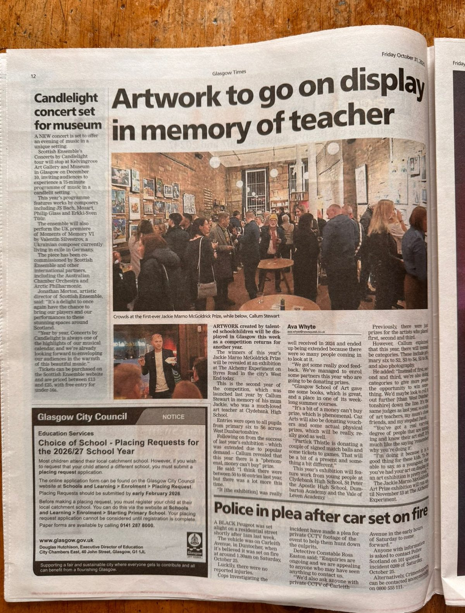
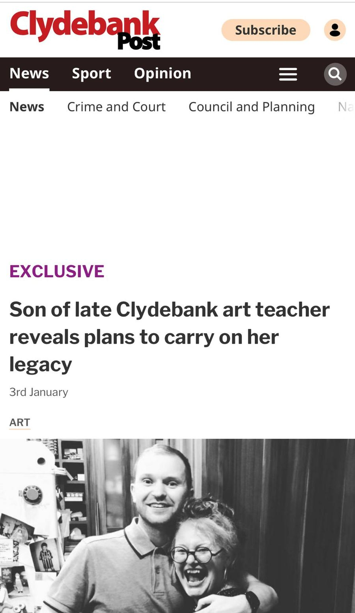
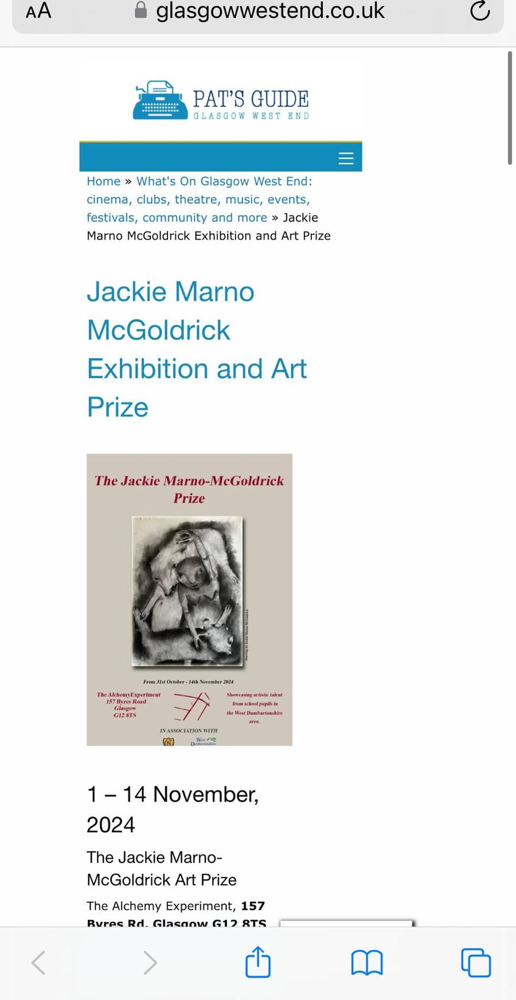

Media coverage
The prize in the press
Selected coverage of the prize and of Jackie, in print and online.
4.8 million estimated combined reach of the 2024 and 2025 campaigns across local press and social media

Glasgow Times Jackie Marno-McGoldrick Prize held in Glasgow for second year 2025
Clydebank Post Son of late Clydebank art teacher reveals plans to carry on her legacy 2024
Glasgow West End The Jackie Marno-McGoldrick Art Prize and Exhibition 2025 The National Jackie Marno: a tribute to an extraordinary woman 2023 Clydebank Post Clydebank High School pays tribute to a much-loved art teacher 2023 Artmag Clydebank’s young talent at The Alchemy Experiment, Glasgow 2024 Instagram The 2025 exhibition 2025 Instagram Opening night 2025 LinkedIn Callum Stewart on founding the prize 2024